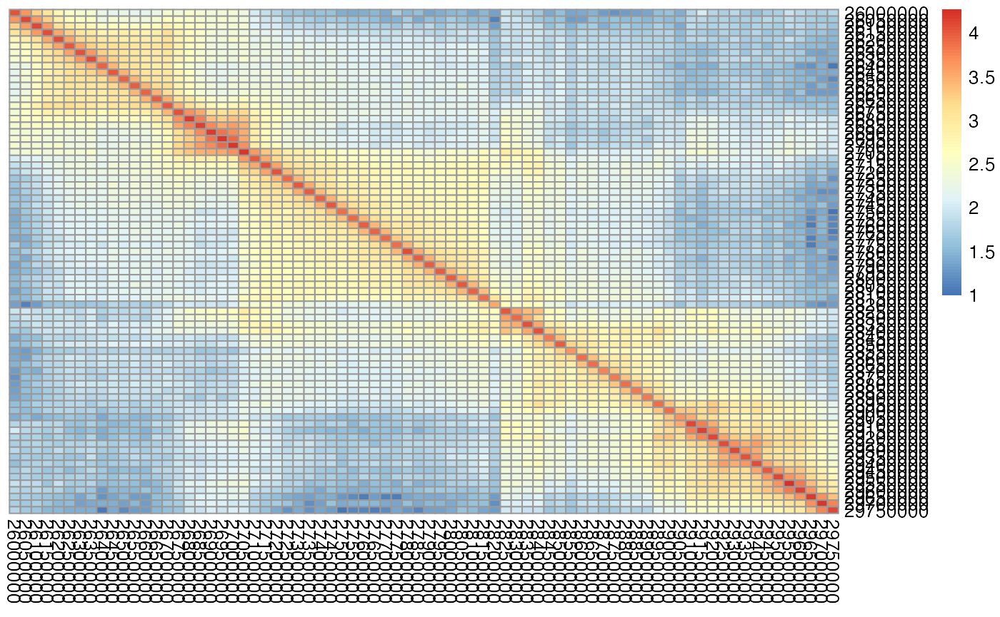

vignettes/Input_Data.Rmd
Input_Data.RmdTADCompare is an R package for differential analysis of TAD boundaries. It is designed to work on a wide range of formats and resolutions of Hi-C data. TADCompare package contains four functions: TADCompare, TimeCompare, ConsensusTADs, and DiffPlot. TADCompare function allows for the identification of differential TAD boundaries between two contact matrices. TimeCompare function takes a set of contact matrices, one matrix per time point, identifies TAD boundaries, and classifies how they change over time. ConsensusTADs function takes a list of TADs and identifies a consensus of TAD boundaries across all matrices using our novel consensus boundary score. DiffPlot allows for visualization of TAD boundary differences between two matrices. The required input includes matrices in sparse 3-column format, \(n \times n\), or \(n \times (n+3)\) formats. This vignette provides a complete overview of input data formats.
BiocManager::install("TADCompare")##
## Attaching package: 'dplyr'## The following objects are masked from 'package:stats':
##
## filter, lag## The following objects are masked from 'package:base':
##
## intersect, setdiff, setequal, union
library(SpectralTAD)
library(TADCompare)\(n \times n\) contact matrices are most commonly associated with data coming from the Bing Ren lab (http://chromosome.sdsc.edu/mouse/hi-c/download.html). These contact matrices are square and symmetric with entry \(ij\) corresponding to the number of contacts between region \(i\) and region \(j\). Below is an example of a \(5 \times 5\) region of an \(n \times n\) contact matrix derived from Rao et al. 2014 data, GM12878 cell line (Rao et al. 2014), chromosome 22, 50kb resolution. Note the symmetry around the diagonal - the typical shape of chromatin interaction matrix. The figure was created using the pheatmap package.

\(n \times (n+3)\) matrices are commonly associated with the TopDom TAD caller (http://zhoulab.usc.edu/TopDom/). These matrices consist of an \(n \times n\) matrix but with three additional leading columns containing the chromosome, the start of the region and the end of the region. Regions in this case are determined by the resolution of the data. The subset of a typical \(n \times (n+3)\) matrix is shown below.
## chr start end X18500000 X18550000 X18600000 X18650000
## 1 chr22 18500000 18550000 13313 4817 1664 96
## 2 chr22 18550000 18600000 4817 15500 5120 178
## 3 chr22 18600000 18650000 1664 5120 11242 316
## 4 chr22 18650000 18700000 96 178 316 162Sparse 3-column matrices are matrices where the first and second columns refer to region \(i\) and region \(j\) of the chromosome, and the third column is the number of contacts between them. This style is becoming increasingly popular and is associated with raw data from Lieberman-Aiden lab (e.g., https://www.ncbi.nlm.nih.gov/geo/query/acc.cgi?acc=GSE63525), and is the data output produced by the Juicer tool (Durand et al. 2016). 3-column matrices are handled internally in the package by converting them to \(n \times n\) matrices using the HiCcompare package’s sparse2full() function. The first 5 rows of a typical sparse 3-column matrix are shown below.
## region1 region2 IF
## 1: 16050000 16050000 12
## 2: 16200000 16200000 4
## 3: 16150000 16300000 1
## 4: 16200000 16300000 1
## 5: 16250000 16300000 1
## 6: 16300000 16300000 10.hic files are a common form of files generally associated with the lab of Erez Lieberman-Aiden (http://aidenlab.org/data.html). To use .hic files you must use the following steps.
straw from https://github.com/aidenlab/straw/ and follow instalation instructions.wget ftp://ftp.ncbi.nlm.nih.gov/geo/series/GSE63nnn/GSE63525/suppl/GSE63525_GM12878_insitu_primary_30.hic
wget ftp://ftp.ncbi.nlm.nih.gov/geo/series/GSE63nnn/GSE63525/suppl/GSE63525_GM12878_insitu_replicate.hic
./straw NONE GSE63525_GM12878_insitu_primary_30.hic 22 22 BP 50000 > primary.chr22.50kb.txt
./straw NONE GSE63525_GM12878_insitu_replicate_30.hic 22 22 BP 50000 > replicate.chr22.50kb.txt
#Read in data
primary = read.table('primary.chr22.50kb.txt', header = FALSE)
replicate = read.table('replicate.chr22.50kb.txt', header = FALSE)
#Run TADCompare
tad_diff=TADCompare(primary, replicate, resolution=50000)Users can also find TADs from data output by cooler (http://cooler.readthedocs.io/en/latest/index.html) and HiC-Pro (https://github.com/nservant/HiC-Pro) with minor pre-processing using the HiCcompare package.
The cooler software can be downloaded from https://mirnylab.github.io/cooler/. A catalog of popular HiC datasets can be found at ftp://cooler.csail.mit.edu/coolers. We can extract chromatin interaction data from .cool files using the following steps:
cooler dump --join Zuin2014-HEK293CtcfControl-HindIII-allreps-filtered.50kb.cool > Zuin.HEK293.50kb.Control.txt
cooler dump --join Zuin2014-HEK293CtcfDepleted-HindIII-allreps-filtered.50kb.cool > Zuin.HEK293.50kb.Depleted.txt
# Read in data
cool_mat1 <- read.table("Zuin.HEK293.50kb.Control.txt")
cool_mat2 <- read.table("Zuin.HEK293.50kb.Depleted.txt")
# Convert to sparse 3-column matrix using cooler2sparse from HiCcompare
sparse_mat1 <- HiCcompare::cooler2sparse(cool_mat1)
sparse_mat2 <- HiCcompare::cooler2sparse(cool_mat2)
# Run TADCompare
diff_tads = lapply(names(sparse_mat1), function(x) {
TADCompare(sparse_mat1[[x]], sparse_mat2[[x]], resolution = 50000)
})HiC-Pro data is represented as two files, the .matrix file and the .bed file. The .bed file contains four columns (chromosome, start, end, ID). The .matrix file is a three-column matrix where the 1st and 2nd columns contain region IDs that map back to the coordinates in the bed file, and the third column contains the number of contacts between the two regions. In this example we analyze two matrix files sample1_100000.matrix and sample2_100000.matrixand their corresponding bed files sample1_100000_abs.bed and sample2_100000_abs.bed. We do not include HiC-Pro data in the package, so these serve as placeholders for the traditional files output by HiC-Pro. The steps for analyzing these files is shown below:
# Read in both files
mat1 <- read.table("sample1_100000.matrix")
bed1 <- read.table("sample1_100000_abs.bed")
# Matrix 2
mat2 <- read.table("sample2_100000.matrix")
bed2 <- read.table("sample2_100000_abs.bed")
# Convert to modified bed format
sparse_mats1 <- HiCcompare::hicpro2bedpe(mat1,bed1)
sparse_mats2 <- HiCcompare::hicpro2bedpe(mat2,bed2)
# Remove empty matrices if necessary
# sparse_mats$cis = sparse_mats$cis[sapply(sparse_mats, nrow) != 0]
# Go through all pairwise chromosomes and run TADCompare
sparse_tads = lapply(1:length(sparse_mats1$cis), function(z) {
x <- sparse_mats1$cis[[z]]
y <- sparse_mats2$cis[[z]]
#Pull out chromosome
chr <- x[, 1][1]
#Subset to make three column matrix
x <- x[, c(2, 5, 7)]
y <- y[, c(2, 5, 7)]
#Run SpectralTAD
comp <- TADCompare(x, y, resolution = 100000)
return(list(comp, chr))
})
# Pull out differential TAD results
diff_res <- lapply(sparse_tads, function(x) x$comp)
# Pull out chromosomes
chr <- lapply(sparse_tads, function(x) x$chr)
# Name list by corresponding chr
names(diff_res) <- chrThe type of matrix input into the algorithm can affect runtimes for the algorithm. \(n \times n\) matrices require no conversion and are the fastest. Meanwhile, \(n \times (n+3)\) matrices take slightly longer to run due to the need to remove the first 3 columns. Sparse 3-column matrices have the highest runtimes due to the complexity of converting them to an \(n \times n\) matrix. The times are summarized below, holding all other parameters constant.
library(microbenchmark)
# Reading in the second matrix
data("rao_chr22_rep")
# Converting to sparse
prim_sparse <- HiCcompare::full2sparse(rao_chr22_prim)
rep_sparse <- HiCcompare::full2sparse(rao_chr22_rep)
# Converting to nxn+3
# Primary
prim_n_n_3 <- data.frame(chr = "chr22",
start = as.numeric(colnames(rao_chr22_prim)),
end = as.numeric(colnames(rao_chr22_prim))+50000,
rao_chr22_prim)
# Replicate
rep_n_n_3 <- data.frame(chr = "chr22",
start = as.numeric(colnames(rao_chr22_rep)),
end = as.numeric(colnames(rao_chr22_rep))+50000,
rao_chr22_rep)
# Defining each function
# Sparse
sparse <- TADCompare(cont_mat1 = prim_sparse, cont_mat2 = rep_sparse, resolution = 50000)
# NxN
n_by_n <- TADCompare(cont_mat1 = prim_sparse, cont_mat2 = rep_sparse, resolution = 50000)
# Nx(N+3)
n_by_n_3 <- TADCompare(cont_mat1 = prim_n_n_3, cont_mat2 = rep_n_n_3, resolution = 50000)
# Benchmarking different parameters
bench <- microbenchmark(
# Sparse
sparse <- TADCompare(cont_mat1 = prim_sparse, cont_mat2 = rep_sparse, resolution = 50000),
# NxN
n_by_n <- TADCompare(cont_mat1 = rao_chr22_prim, cont_mat2 = rao_chr22_rep, resolution = 50000),
# Nx(N+3)
n_by_n_3 <- TADCompare(cont_mat1 = prim_n_n_3, cont_mat2 = rep_n_n_3, resolution = 50000), times = 5, unit = "s"
)
summary_bench <- summary(bench) %>% dplyr::select(mean, median)
rownames(summary_bench) <- c("sparse", "n_by_n", "n_by_n_3")
summary_bench## mean median
## sparse 0.24663187 0.16743460
## n_by_n 0.08653424 0.09028903
## n_by_n_3 0.09875885 0.10077293The table above shows the mean and median of runtimes for different types of contact matrices measured in seconds. As we see, TADCompare is extremely fast irrespectively of the parameters. However, sparse matrix inputs will slow down the algorithm. This can become more apparent as the size of the contact matrices increase.
## R version 4.0.2 (2020-06-22)
## Platform: x86_64-apple-darwin17.0 (64-bit)
## Running under: macOS 10.16
##
## Matrix products: default
## BLAS: /Library/Frameworks/R.framework/Versions/4.0/Resources/lib/libRblas.dylib
## LAPACK: /Library/Frameworks/R.framework/Versions/4.0/Resources/lib/libRlapack.dylib
##
## locale:
## [1] en_US.UTF-8/en_US.UTF-8/en_US.UTF-8/C/en_US.UTF-8/en_US.UTF-8
##
## attached base packages:
## [1] stats graphics grDevices utils datasets methods base
##
## other attached packages:
## [1] microbenchmark_1.4-7 TADCompare_1.1.1 SpectralTAD_1.4.0
## [4] dplyr_1.0.2 BiocStyle_2.16.1
##
## loaded via a namespace (and not attached):
## [1] TH.data_1.0-10 colorspace_2.0-0
## [3] ggsignif_0.6.0 ellipsis_0.3.1
## [5] rio_0.5.16 CGHcall_2.50.0
## [7] rprojroot_2.0.2 DNAcopy_1.62.0
## [9] XVector_0.28.0 GenomicRanges_1.40.0
## [11] fs_1.5.0 rstudioapi_0.13
## [13] ggpubr_0.4.0 listenv_0.8.0
## [15] mvtnorm_1.1-1 HiCcompare_1.10.0
## [17] codetools_0.2-16 splines_4.0.2
## [19] R.methodsS3_1.8.1 impute_1.62.0
## [21] knitr_1.30 Rsamtools_2.4.0
## [23] broom_0.7.2 R.oo_1.24.0
## [25] pheatmap_1.0.12 BiocManager_1.30.10
## [27] compiler_4.0.2 backports_1.2.0
## [29] assertthat_0.2.1 Matrix_1.2-18
## [31] limma_3.44.3 htmltools_0.5.0
## [33] tools_4.0.2 gtable_0.3.0
## [35] glue_1.4.2 GenomeInfoDbData_1.2.3
## [37] reshape2_1.4.4 Rcpp_1.0.5
## [39] carData_3.0-4 Biobase_2.48.0
## [41] cellranger_1.1.0 pkgdown_1.6.1
## [43] vctrs_0.3.5 Biostrings_2.56.0
## [45] nlme_3.1-150 QDNAseq_1.24.0
## [47] xfun_0.19 stringr_1.4.0
## [49] globals_0.13.1 openxlsx_4.2.3
## [51] lifecycle_0.2.0 gtools_3.8.2
## [53] rstatix_0.6.0 InteractionSet_1.16.0
## [55] future_1.20.1 MASS_7.3-53
## [57] zoo_1.8-8 zlibbioc_1.34.0
## [59] scales_1.1.1 hms_0.5.3
## [61] ragg_0.4.0 sandwich_3.0-0
## [63] parallel_4.0.2 SummarizedExperiment_1.18.2
## [65] rhdf5_2.32.4 RColorBrewer_1.1-2
## [67] yaml_2.2.1 curl_4.3
## [69] memoise_1.1.0 gridExtra_2.3
## [71] ggplot2_3.3.2 CGHbase_1.48.0
## [73] stringi_1.5.3 S4Vectors_0.26.1
## [75] desc_1.2.0 BiocGenerics_0.34.0
## [77] zip_2.1.1 BiocParallel_1.22.0
## [79] GenomeInfoDb_1.24.2 rlang_0.4.8
## [81] pkgconfig_2.0.3 systemfonts_0.3.2
## [83] matrixStats_0.57.0 bitops_1.0-6
## [85] evaluate_0.14 lattice_0.20-41
## [87] purrr_0.3.4 Rhdf5lib_1.10.1
## [89] cowplot_1.1.0 tidyselect_1.1.0
## [91] parallelly_1.21.0 plyr_1.8.6
## [93] magrittr_2.0.1 bookdown_0.21
## [95] R6_2.5.0 IRanges_2.22.2
## [97] generics_0.1.0 multcomp_1.4-15
## [99] DelayedArray_0.14.1 pillar_1.4.7
## [101] haven_2.3.1 foreign_0.8-80
## [103] mgcv_1.8-33 survival_3.2-7
## [105] abind_1.4-5 RCurl_1.98-1.2
## [107] tibble_3.0.4 future.apply_1.6.0
## [109] PRIMME_3.1-3 crayon_1.3.4
## [111] car_3.0-10 KernSmooth_2.23-18
## [113] rmarkdown_2.5 readxl_1.3.1
## [115] grid_4.0.2 data.table_1.13.2
## [117] marray_1.66.0 forcats_0.5.0
## [119] digest_0.6.27 tidyr_1.1.2
## [121] R.utils_2.10.1 textshaping_0.2.1
## [123] stats4_4.0.2 munsell_0.5.0